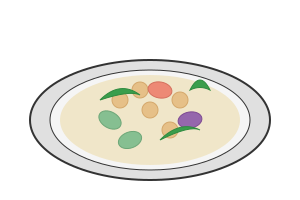
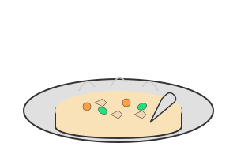
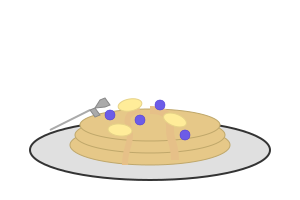

Recetas Saludables

Bowl de proteínas vegetarianas
Un delicioso bowl completo con garbanzos, quinoa y verduras de temporada.

Sopa de pollo y verduras
Una reconfortante sopa rica en proteínas y con bajo contenido calórico.

Pancakes de avena y plátano
Un desayuno nutritivo y energético para comenzar el día con fuerza.
Batido verde detox
Un batido refrescante lleno de nutrientes para depurar tu organismo.